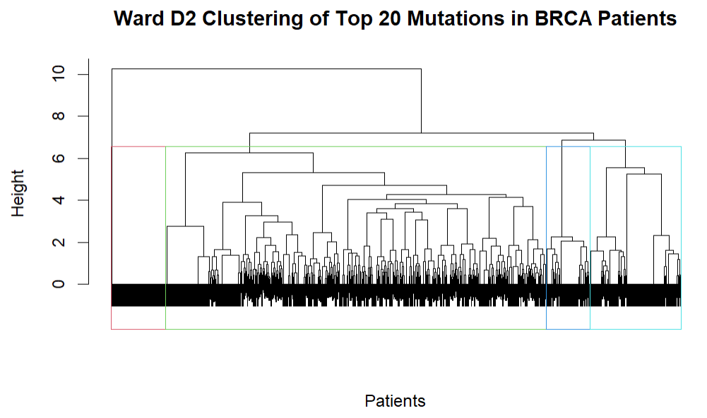

Breast Cancer Genomic Analysis Using Machine Learning



Problem: Breast cancer patients exhibit high biological variations, and these datasets contain thousands of genes which makes it difficult to identify meaningful biological drivers. It is also valuable in cancer research to find patient subgroups that share similar molecular mechanisms, tumour behaviour, and clinical outcomes. With the help of integrating machine learning techniques with classical biostatistics, my goal was to explore underlying biological structure and patterns across thousands of patients by analyzing gene expression, mutation profiles, and clinical conditions.
Solution: I designed a complete bioinformatics pipeline using clustering and statistical modelling on TCGA breast cancer patient data. This involved examining mutation, expression, and clinical metadata using an integrated framework of unsupervised learning, differential expression, pathway enrichment, and statistical tests. The analysis revealed that immune-related pathways were the primary drivers of transcriptomic differences, while neither mutation or expression clusters showed differences in patient outcomes.
Impact: This project improved my skills in machine learning for biological data, statistical hypothesis testing, and interpretation of high-dimensional genomic datasets. I gained experience in dimensionality reduction techniques like PCA for visualizing complex data and exposure to clustering algorithms to identify patterns. The biological results reveal the complexity of cancer outcomes with many factors beyond simple genomic profiles that shape disease behaviour.
Features: PCA, Clustering, DESeq2, R, KEGG/GO Enrichment, Survival Analysis, Statistical Testing